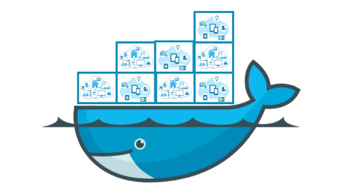

.jpg)
Tecnologías de Web APIs
Reglas que permiten la comunicación entre aplicaciones actuando como capa intermedia para transferencias de datos.
Identificador uniforme de recursos que sirve para acceder a un recurso físico o abstracto por Internet. Existen dos tipos de clase URI:
- URL: Forma de identificar una dirección en la red.
- URN: Identifica un recurso por su nombre único y persistente.
- scheme: https
- authority: example.org
- path: test/test1
- query: search=test-question
- fragment: part2
Separa la ruta del recurso path de la cadena de consulta (query string), indicando el inicio de parámetros variables.
Para que los navegadores web rastreen, personalicen y guarden información acerca de la sesión de cada usuario y agilizar la experiencia en internet, tambien permite que un servidor pueda utilizar las cookies de otro
GET Y POST
- GET: Recupera datos sin alterar el estado del servidor ejemplo: cargar una página, buscar algo
- POST: Envía información para crear/modificar recursos ejemplo: rellenar un formulario, iniciar sesión
- 404: El servidor no pudo encontrar la página o el recurso que fue solicitado.
- 503: El servidor está funcionando temporalmente pero no puede procesar la solicitud.
Se define a jwt como un contenedor compacto y autonomo para transmitir información de forma segura entre partes como un objeto JSON.
Composicion Tecnica:
- Header: Especifica el tipo de token y el algoritmo de firma.
- Payload: Contiene las aseveraciones o Claims sobre el usuario y metadatos (expiracion y emisor).
- Signature: Criptograma generado para validar que el contenido no ha sido manipulado durante el transito.
- Planificación y diseño: Consiste en definir los objetivos de la API, conocer a la audiencia objetivo y diseñar el contrato de la API.
- Desarrollo e implementación: Los usuarios escriben el código de backend para implementar la lógica definida en la fase de diseño, eligiendo un lenguaje de programación y un framework (por ejemplo, Python y Flask, o Node.js y Express).
- Pruebas: Son fundamentales para garantizar que la API sea fiable, segura y tenga un buen rendimiento.
- Implementacion: se implementa en un entorno de alojamiento al que pueden acceder las aplicaciones cliente, puede ser un servidor tradicional, una máquina virtual o una plataforma moderna sin servidor en la nube.
- Monitorización y mantenimiento: La API debe monitorizarse continuamente para detectar errores, latencia y patrones de uso.
- Gestión de versiones: Las APIs deben cambiar a medida que evolucionan las necesidades empresariales.
Microservicios y Nube
Enfoque nativo de la nube donde una aplicación se conforma de servicios pequeños poco acoplados y desplegables de forma independiente.
Equipos pequeños, autónomos y multidisciplinario.
Una aplicación se crea con componentes independientes que ejecutan cada proceso de la aplicación como un servicio y a su vez estos se comunican a través de una interfaz bien definida mediante API ligeras
Es un modelo de desarrollo de software tradicional que utiliza un código base para realizar varias funciones empresariales
Dividiendo una aplicación grande en servicios pequeños, independientes y autónomos, cada uno enfocado en una capacidad empresarial específica
Protocolos de mensajería para la comunicación asincrónica. Se dividiendo una aplicación grande en componentes pequeños, autónomos y modulares
Los microservicios son un estilo arquitectónico para construir aplicaciones como conjuntos de servicios pequeños e independientes, mientras que SOAP es un protocolo estricto para intercambiar información estructurada
Es una metodología de desarrollo de software que acelera la entrega de aplicaciones y servicios de alto rendimiento mediante la combinación y automatización del trabajo de los equipos de desarrollo de software (Dev) y operaciones de TI (Ops).

Contenedores
Paquetes de software que incluyen todo lo necesario para ejecutarse en cualquier entorno al virtualizar el sistema operativo.
Es un mecanismo de empaquetado lógico en el que las aplicaciones pueden extraerse del entorno en que realmente se ejecutan. Facilita el despliegue uniforme de las aplicaciones basadas en ellos.
Sobre un sistema operativo como Linux o Windows utilizando un motor de contenedores como Docker. Asi mismo permitiendo que los desarrolladores avancen con mucha más rapidez.
- Kubernetes: Herramienta de orquestación de contenedores.
- Contenedores: Pila de tecnologías de contenedores para crear y ejecutar contenedores.
- Kubernetes: Coordinar varios contenedores en varios servidores.
- Contenedores: Empaquetar aplicaciones con bibliotecas y tiempos de ejecución en imágenes de contenedor.
- Kubernetes: Definir y ejecutar aplicaciones complejas en contenedores a escala.
- Contenedores: Estandarizar las operaciones de las aplicaciones y enviar el código más rápidamente.
En la creación y administración de contenedores proporciona la herramienta de software para empaquetar microservicios como programas que se pueden implementar en diferentes plataformas.
.png)
Desarrollo de aplicaciones para la Nube
Modelo para crear aplicaciones altamente escalables y resistentes que satisfacen las demandas modernas del mercado.
Son programas de software que constan de varios servicios pequeños e interdependientes llamados microservicios.
La arquitectura nativa en la nube combina componentes de software que los equipos de desarrollo utilizan para crear y ejecutar aplicaciones escalables nativas en la nube. La CNCF enumera la infraestructura inmutable, los microservicios, las API declarativas, los contenedores y las mallas de servicios.
Fundación de Computación Nativa de la Nube (CNCF) es una organización de código abierto que apoya a las empresas en su transformación hacia arquitecturas nativas en la nube
Es la infraestructura de software alojada en un centro de datos externo y puesta a disposición de los usuarios mediante pago por uso
Implica cambiar parte del módulo de software para migrar la aplicación a los servidores en la nube, de esa forma se puede utilizar la aplicación desde un navegador mientras conserva sus características originales.